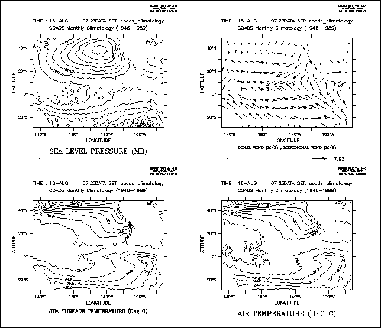

6.7.1 Ferret layout controls
Layout of plots can be controlled with commands which modify window size and aspect ratio, and viewports.
Ferret commands:
- SET WINDOW/SIZE=/NEW/ASPECT=
- DEFINE VIEWPORT/XLIMITS=/YLIMITS=/TEXT= view_name/AXES
- SET VIEWPORT view_name
- CANCEL VIEWPORT
A viewport is a sub-rectangle of a full window. Viewports can be used to put multiple plots onto a single window. Issuing the command SET VIEWPORT is best thought of as entering "viewport mode." While in viewport mode all previously drawn viewports remain on the screen until explicitly cleared with either CANCEL VIEWPORT or SET WINDOW/CLEAR. If multiple plots are drawn in a single viewport without the use of /OVERLAY the current plot will erase and replace the previous one; the graphics in other viewports will be affected only if the viewports overlap. If viewports overlap the most recently drawn graphics will always lie on top, possibly obscuring what is underneath. By default, the state of "viewport mode" is canceled. A number of the most commonly desired viewports are pre-defined.
|
|
|
| Name | Description |
|
FULL |
full window |
|
LL |
lower left quadrant of window |
|
LR |
lower right quadrant of window |
|
UR |
upper right quadrant of window |
|
UL |
upper left quadrant of window |
|
RIGHT |
right half of window |
|
LEFT |
left half of window |
|
UPPER |
upper half of window |
|
LOWER |
lower half of window |
Example: Graphics Viewports
Plot four variables from coads_climatology into the four quadrants of a single window

6.7.1.3 Advanced usage of viewports
For the purposes of defining viewports, a graphics window is considered to have length 1 and height 1. All viewport commands refer to positions relative to the current aspect ratio of the window. Thus,
yes? DEFINE VIEWPORT/XLIM=.5,1/YLIM=.5,1 V5
will locate the origin of viewport V5 in the upper right of the output window regardless of the shape of the window.
yes? DEFINE VIEWPORT/XLIM=0.,1/YLIM= 0,.3 V1 yes? DEFINE VIEWPORT/XLIM=0.,1/YLIM=.3,.6 V2 yes? DEFINE VIEWPORT/XLIM=0.,1/YLIM=.6,.9 V3
defines three viewports; each takes a third of the height of the page, and the entire width.
The qualifiers /XLIMITS=x1,x2 and /YLIMITS=y1,y2 allow the user to specify a portion of the graphics window to be the defined viewport. The arguments must be values between [0,1] (NOT world coordinates). x1 and x2 indicate the lower and upper bounds for the length of the window to be defined as the viewport; y1 and y2 serve an analogous purpose for height.
The /TEXT=n qualifier allows the user control over the shrinkage or enlargement of text on the plot. A value of /TEXT=1 indicates that the text size should be the same as it is on the full screen output. If a value less than 1 is specified the text will shrink. If a value is not specified Ferret chooses a value appropriate to the viewport size. Acceptable values are 0 < n < inf. but only values up to about 2 yield useful results.
The /AXES qualifier says that the limits are interpreted as the normalized positions of the plot axes rather than of the entire viewport . This lets you draw viewports with less white space between them.
See DEFINE VIEWPORT for details of defining custom viewports. Ferret has a limit of 200 pre-defined viewports allowed at one time. Viewport definitions can be removed with CANCEL VIEWPORT.
Several scripts are included with the Ferret distribution for defining sets of viewports:
| Script name | Description |
|---|---|
| viewports_demo.jnl | quick qdemo using line plots and viewports |
| multi_view.jnl | |
| landscape2x2.jnl | |
| landscape3x2.jnl | |
| portrait1x2.jnl | |
| portrait1x3.jnl | |
| portrait1x4.jnl |
6.7.1.4 Viewport Symbols
When we "set viewport viewport_name" a number of Ferret symbols are set, giving access to the viewport size, scaling, the values given to XLIM and YLIM when defining the viewport, and the margins. See the Ferret Special Symbols section for a list of these symbols.
6.7.2 PPLUS layout commands
The following PPLUS commands can be called to customize the plot layout. See the section on PPLUS graphical commands for how to call PPLUS plot commands.
|
|
|
| Command | Function |
|
ORIGIN |
sets distance of plot origin from lower left corner PPL ORIGIN |
|
BOX |
controls drawing of a box around the plotting area PPL box |
|
CROSS |
controls drawing of lines through (0, 0) on graph PPL CROSS |
|
ROTATE |
rotates plot by 90 degrees on screen and plotter PPL ROTATE |
|
AXLEN |
sets axis lengths PPL AXLEN |
|
SHAKEY |
customizes the color key PPL SHAKEY (see also the /KEY=HORIZONTAL qualifier option for color plots) |
|
VECKEY |
customizes the vector key PPL VECKEY (see also the VECTOR/NOKEY qualifier) |
|
AXSET |
includes/excludes particular axes PPL AXSET (see also PLOT/AXES=, CONTOUR/axes=, etc.) |
|
SIZE |
sets the overall size of the graphics window PPL SIZE (see also SET WINDOW/SIZE) |
Example
A small plot, rotated 90 degrees, positioned with its origin at (4,4) on the plot page. Use the /AXES qualifier to plot just the left and bottom axes.
yes? PPL BOX ON yes? PPL ORIGIN 4,4 yes? PPL CROSS ON yes? PPL ROTATE ON yes? PPL AXLEN 2,2 yes? PLOT/I=1:30/AXES=0,1,1,0 sin(i)
6.7.3 Controlling the white space around plots
The location and size of the axis rectangle within the viewport or window determines the amount of white space surrounding a plot. Complete control over this is possible using low level controls, DEFINE VIEWPORT/TEXT_PROMINENCE, PPL ORIGIN, and PPL AXLEN, but these commands are sometimes awkward to work with. A simpler strategy is to use the GO tool
yes? GO margins
When given without arguments this command will report the amount of white space surrounding a plot. With arguments it will adjust the axis origins and lengths according to the requested margins. Try the Unix command
> Fgo -more margins
for further documentation.